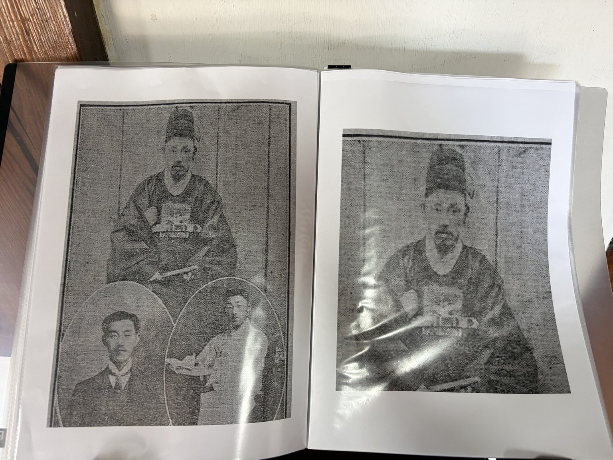

Who Was "Jinsa Lee"? — Kim Koo and the Lee Dong-beom Family of Hampyeong
The Lee Dong-beom Family of Hampyeong: A 128-Year Bond | Part 1
[EN] English edition · Translated from the Korean original · 한국어 원문
A house where the young Baekbeom Kim Koo (also romanized as Kim Gu) stayed for about two weeks, 128 years ago, and the descendants who have kept that house's story alive to this day. Recently, the Kim Koo Museum & Library conducted an interview with my father.
These were family stories I had heard since childhood, but watching my father explain them, showing old photographs and documents one by one, they struck me anew. We no longer want to leave them only as our family's memories; we are now putting that history in order by searching for objective records. Today I would like to introduce the bond between "Jinsa Lee" in Baekbeom Ilji and our family.

1. Two Weeks in 1898
In 1898 the young Kim Koo (金九, pen name Baekbeom), having escaped from Incheon Prison, wandered through the three southern provinces and arrived in Hampyeong, South Jeolla Province. The house he went to was that of the "Jinsa Lee" recorded in Baekbeom Ilji, Kim Koo's autobiography (a jinsa was a licentiate of the classical civil service examination). The story of how a stay meant to last a single night stretched to about two weeks is told in detail in Part 2. That "Jinsa Lee" was my great-great-grandfather, Seok-am Lee Dong-beom (石庵 李東範, 1869–1940).

That the main building of the head family house still stands has special meaning for our family. Whether the present building is the same as the one of 1898, however, remains to be verified; we look at this, together with the relationship between the two family houses, in Part 4.
2. My Great-Great-Grandfather in 1917
Lee Dong-beom served as county magistrate of Mangyeong and of Eunyul during the Korean Empire period. After leaving office he lived in Hampyeong, and on July 8, 1917, the Maeil Sinbo introduced him as a notable figure of South Jeolla Province. The article records his photograph, his career, and his family relationships.

Lee Dong-beom's eldest son was Lee Jae-seung, and his second son was Lee Jae-hyeok. The house that continued through the line of the eldest son, Lee Jae-seung, is our head family house; the house of the second son, Lee Jae-hyeok, is now a designated cultural heritage of South Jeolla Province. The story of the two houses continues in Part 4.

We began this research because of the bond with Kim Koo, but along the way the Lee Dong-beom family's place in the modern local history of Hampyeong has also been gradually coming to light.
3. The House He Tried to Find Again
The story that moves me most is the reunion after liberation. In September 1946, Kim Koo visited Hampyeong. He is said to have tried once more to find the house of Jinsa Lee, who had welcomed him about half a century earlier, but to have remembered the house as being in Naju rather than Hampyeong. Afterward, Lee Dong-beom's two sons went to see Kim Koo in Seoul, and this episode is also recorded in Baekbeom Ilji. The full story is told in Part 3.

Great figures in history are often remembered for momentous events or achievements. But the Kim Koo who remains in this story is also a man who, long years later, remembered someone who had welcomed him warmly and tried to find him again.
4. Gwangmyeong (光明): Two Characters
Our family has a special heirloom: an original piece of calligraphy, Gwangmyeong (光明, "Bright Light"), handed down as the work of Kim Koo.

The calligraphy bears the name of my grandfather, Lee Sang-rae, and a date in 1947. The reading and meaning of the inscription are discussed in detail in Part 3. Our family regards this calligraphy as a precious legacy showing that the bond between Kim Koo and the Lee Dong-beom family continued into later generations.
Of course, the exact circumstances in which the calligraphy was given, and an expert appraisal of the handwriting and seal impressions, are matters for further research. Even so, for our family the two characters gwangmyeong carry a special resonance. They call to mind a hope for a bright future after a dark era, and a heart that long remembered a bond once formed.
5. The Little-Known Head Family House
In this research there was one point my father and I especially wanted to set right: the history of the Lee Dong-beom head family house. Some later records state that the old main building was torn down, which can read as if the head family house itself no longer exists. However, the line of the head family that passed through Lee Dong-beom's eldest son, Lee Jae-seung, continues to this day, and the main building of the head family house also still stands.
The house of the line of the second son, Lee Jae-hyeok, is designated a Cultural Heritage Material of South Jeolla Province. The construction dates of the two houses, their relationship, and the history of the present main building of the head family house are examined in Part 4, together with a 2003 survey report. In that process, we intend to record clearly what has been confirmed and to leave what has not yet come to light as a task for future research.
6. From Memory to Record
This interview with the Kim Koo Museum & Library was especially meaningful to me because of my father. The stories he told over the long years he kept the family house can now reach other people through an interview and documents.
Gratefully, when the Kim Koo Museum & Library posted the interview video on its official YouTube channel, it introduced my great-great-grandfather Lee Dong-beom as an "independence activist." As far as we know, this is the first record to call him that. Because an official evaluation by the state is still pending, we receive it with caution; but it was the moment a story long kept only in family memory first received a name from outside, and it gave our whole family great strength.
What our family hopes for is not to create a grand story. It is to introduce accurately the bond recorded in Baekbeom Ilji, to preserve the photographs and heirlooms that remain, and to correct, one by one, what has been misreported.
In this series, after looking in turn at the two weeks of 1898 (Part 2), the 1946 reunion and the Gwangmyeong calligraphy (Part 3), and the head family house and the Lee Jae-hyeok house (Part 4), I will introduce, one by one, the lives of three generations of grandfathers — Lee Dong-beom, Lee Jae-seung, and Lee Sang-rae — and my grandmother Shin Mun-ran. I will continue to record with care the bond that began in Hampyeong 128 years ago. I would be grateful if you would also watch my father's story as captured by the Kim Koo Museum & Library.
Official interview, Kim Koo Museum & Library [Korean]
https://www.youtube.com/watch?v=NZlIOjAmNzg
Next
- Part 2: Why He Stayed Two Weeks — Hiding in Hampyeong, 1898 https://lsaru23-ai.github.io/hp-db-archive/en/post2.html
Main references
[1] Baekbeom Ilji, records concerning the 1898 stay in Hampyeong and the reunion after liberation.
[2] Maeil Sinbo, July 8, 1917, profile of Lee Dong-beom.
[3] Hampyeong Lee Clan Comprehensive Genealogy (Hampyeong Issi Daedongbo).
[4] South Jeolla Provincial Cultural Heritage Committee, "Survey Report on the Lee Jae-hyeok House, Hampyeong," 2003.
[5] The Gwangmyeong calligraphy held by the Lee Dong-beom family.
This piece was written on the basis of the documents confirmed so far, materials held by the family, and the testimony of descendants. Historical facts and family tradition are distinguished, and the content will be supplemented as further research proceeds.
This English edition is a translation of the Korean historical archive. The Korean original remains the authoritative version. Documentary evidence, family recollections, and unresolved questions are distinguished throughout.
Chinese characters given in parentheses after names and source titles are supplied for identification; they are not quotations from the original documents unless shown in quotation marks.